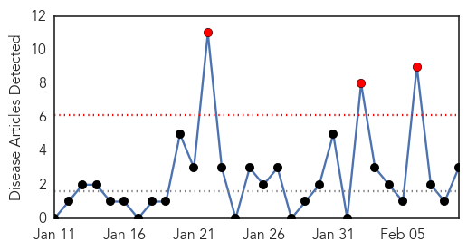
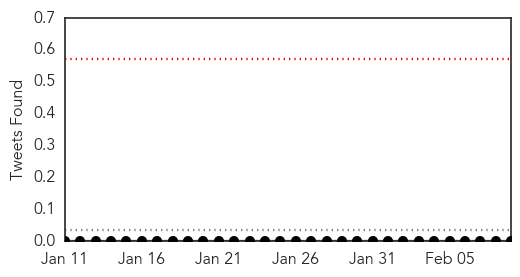
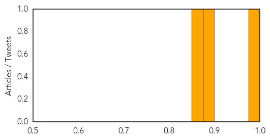

Chikungunya
30-Day Web Trend
3 alerts, 0 warnings

30-Day Twitter Trend
0 alerts, 0 warnings

Article Locations
Article Confidences
Top Articles:
Top Tweets:
-
No tweets found for Feb 09, 2015
Cholera
30-Day Web Trend
2 alerts, 8 warnings
30-Day Twitter Trend
5 alerts, 0 warnings

Article Locations

Article Confidences

Top Articles:
-
No articles found for Feb 09, 2015
Top Tweets:
- 0.562
- More cholera cases in Nigeria: http://t.co/0xa1HashJ4 Our challenge in this locality is absence of potable water & proper sewage system